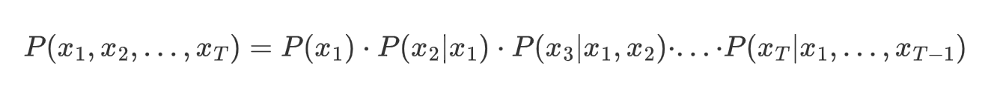
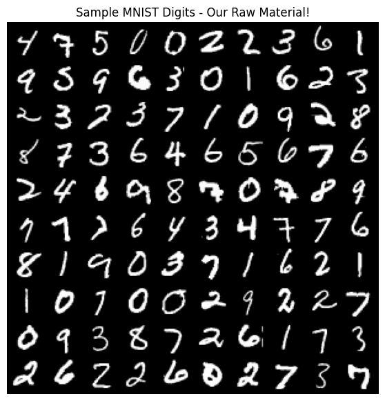
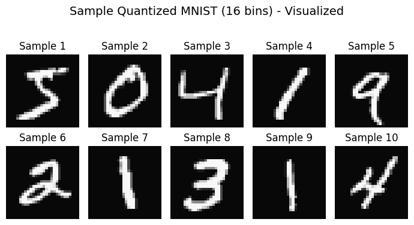
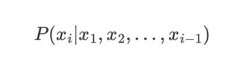
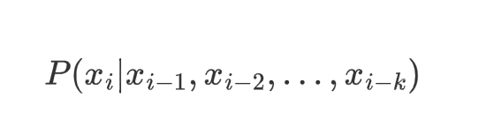
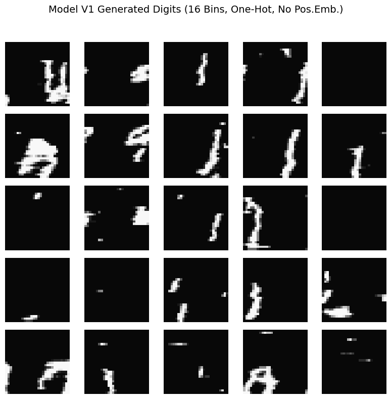
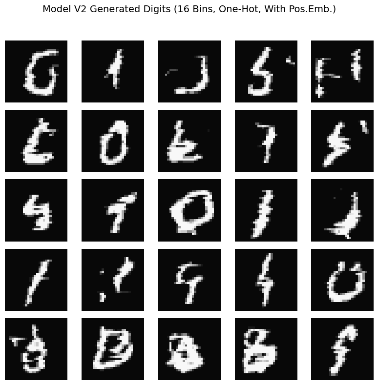
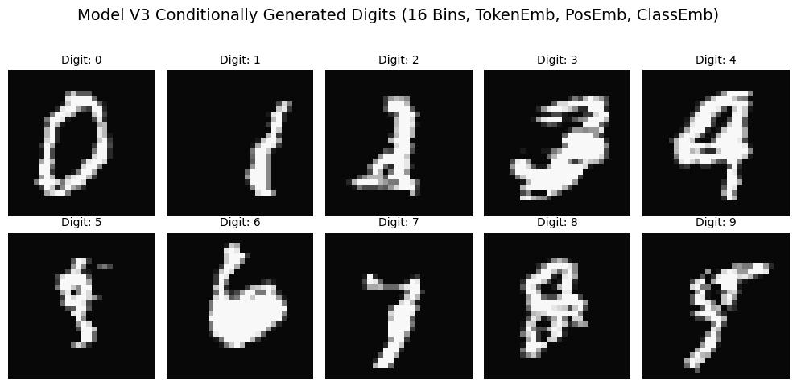
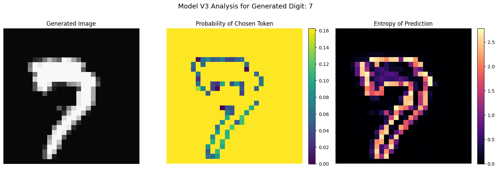

逐个生成像素
你的第一个自回归图像生成模型
我们将使用简单的 MLP 构建一个基本的自回归模型，用于生成手写数字的图像，重点在于理解根据其前驱像素预测下一个像素的核心概念。这是一次对基础生成式 AI 的实践探索，通过一个相当简单的模型展示了其中的一些核心概念。我们将训练的模型与当前最先进的技术相差甚远，但它将是一个理解自回归模型核心概念的很好的起点。
欢迎，很高兴你在这里！
我是 Tuna。我的工作基本上就是关于图像和视频生成的。这是我在博士期间以及我在 Adobe（参与 Firefly 项目！）和亚马逊 AGI 实习期间所专注的领域。有一段时间，我一直在使用基于扩散的模型，我知道它们非常强大。
但生成模型的领域一直在不断发展，我想探索其他类型的生成模型。目前，我正在深入研究自回归模型。我发现学习一个主题最好的方法就是尝试教给别人。所以，这个博客系列是我试图自学自回归模型基础知识的一种尝试，希望你也可以从中有所收获。我会从基础开始，逐个部分地理解这些模型是如何工作的。
什么是让模型"自回归"？
好了，"自回归"。让我们用一些数学直觉来分解它。
即使你不这么称呼它，你也已经见过"自回归"模型的实际应用。其核心在于，它基本上是根据之前发生的所有事件来预测下一个结果。
想想你在手机上打字的方式。当你输入"the weather is …"时，键盘会根据你输入的单词建议补全，例如"sunny"、"rainy"、"perfect for research"（也许不包括最后一个）。这是语言中的自回归模型在起作用。
从数学上讲，对于一个序列（x_1, x_2, …, x_T），自回归模型学习：

这只是概率的链式法则。每个新元素都依赖于所有之前元素。
对于图像，我们可以将每个像素视为我们序列中的一个元素。因此，我们不是预测下一个单词，而是根据我们已经看到的所有像素来预测下一个像素值。酷吧？
让我们从数据开始：认识我们的 MNIST 朋友
在深入数学之前，让我们先熟悉一下我们的数据。我们将使用 MNIST 数字——它们简单、易于理解，并且适合学习基础知识。
import random
import torchvision
import matplotlib.pyplot as plt
import torch
import torchvision.transforms as transforms
import numpy as np
import torch.nn as nn
import torch.nn.functional as F
import torch.optim as optim
from tqdm.auto import tqdm as auto_tqdm # 如果用户同时使用两者，重新命名以避免冲突
# 加载并可视化一些 MNIST 数据
mnist = torchvision.datasets.MNIST(root='./data', train=True, download=True, transform=torchvision.transforms.ToTensor())
# 获取 100 个随机图像索引
rand_indices = random.sample(range(len(mnist.data)), 100)
# 获取图像
images = mnist.data[rand_indices]
# 创建一个漂亮的网格来可视化
grid = torchvision.utils.make_grid(images.unsqueeze(1), nrow=10) #添加通道维度
# 绘制网格
plt.figure(figsize=(7, 7))
plt.imshow(grid.permute(1, 2, 0), cmap='gray') # 切换到 (H、W、C) 格式
plt.axis('off')
plt.title("Sample MNIST Digits - Our Raw Material!")
plt.show()

全局配置和超参数
将所有模型、数据和训练的关键超参数集中定义一处。这便于轻松修改，并确保不同模型版本之间的一致性。
# --- 图像与数据的通用参数 ---
IMG_SIZE = 28 # MNIST 正方形图像的尺寸（例如 28 表示 28x28）。
N_PIXELS = IMG_SIZE * IMG_SIZE # 一张图像中的总像素数。
# --- 量化与分词设置 ---
NUM_QUANTIZATION_BINS = 16 # K：像素词汇表大小（token 从 0 到 K-1）。8 位时最大为 256。
# 起始/填充 token 将是一个超出 0 到 K-1 范围的整数。
# 我们将使用 K 作为其值，因此 token 嵌入层需要容纳 K+1 个不同的值。
START_TOKEN_VALUE_INT = NUM_QUANTIZATION_BINS
NUM_CLASSES = 10 # 条件生成的类别数（MNIST 数字 0-9）
# --- 自回归模型结构 ---
CONTEXT_LENGTH = 28 # 输入到 MLP 的前序 token（上下文窗口）数量。
HIDDEN_SIZE = 1024 # MLP 隐藏层的大小。
# 用于 V2 & V3 模型（位置嵌入）
POS_EMBEDDING_DIM = 32 # 可学习的位置嵌入维度（行和列各一个）。
# 用于 V3 模型（token 嵌入）
TOKEN_EMBEDDING_DIM = 16 # 学习得到的像素 token 嵌入维度。
CLASS_EMBEDDING_DIM = 16 # 学习得到的类别标签嵌入维度（V3 模型）
# --- 数据集生成 ---
MAX_SAMPLES = 5000000 # 从 MNIST 生成的最大（上下文，目标）训练对数量。
# 有助于控制数据生成和训练时间。
# --- 训练超参数（V1、V2、V3 通用，便于管理） ---
LEARNING_RATE = 0.001 # AdamW 优化器的学习率。
EPOCHS = 20 # 每个模型的训练轮数。
BATCH_SIZE_TRAIN = 512 # 训练时使用的批量大小。
# --- 设备设置（优先使用 GPU，如可用） ---
# 该 device 变量将被训练和生成函数全局使用。
_device_type = "cpu" # 默认
if torch.cuda.is_available():
_device_type = "cuda"
print("全局配置：检测到 CUDA（GPU），使用 CUDA。")
elif torch.backends.mps.is_available(): # 针对 Apple Silicon
_device_type = "mps"
print("全局配置：检测到 MPS（Apple Silicon GPU），使用 MPS。")
else:
print("全局配置：未检测到 GPU，使用 CPU。")
device = torch.device(_device_type) # 定义全局 device 变量
"像素作为Token"方法：量化强度
我们将图像生成处理得更像语言建模。每个像素的强度将被量化到离散的若干个区间中。每个区间再获得一个整数标签，将我们的像素转化为固定词汇表中的"token"或"word"。
1. 量化
-
我们取连续的灰度像素值（0.0 到 1.0）。
-
我们将这个范围划分为 K 个离散的区间（例如 K=16 或 K=256 ）。
-
每个像素的原始强度被映射到其所在bin的整数标签上。
-
示例：如果 K=4，强度 0.0-0.25 映射到标记 0，0.25-0.5 映射到标记 1，以此类推。
2. 作为分类的预测
-
现在模型的任务是，根据前几个像素的标记（token）来预测下一个像素的整数标签（标记）。
-
对于每个像素来说，这是一个 K 类分类问题。
优点：
-
可以使用强大的分类机制（如交叉熵损失）。
-
可与类似自然语言处理的嵌入层等技术结合使用。
权衡：
-
信息损失：量化会从原始灰度值中损失一些精度。增加 bin 会减少这种损失，但会增加模型复杂度。
-
词汇量：bin 的数量（K）成为我们的词汇量。
def quantize_tensor(tensor_image, num_bins):
"""将张量图像（值为0-1）量化为num_bins个整数标签（0到num_bins-1）。"""
# 缩放到[0, num_bins - epsilon]，然后向下取整得到整数标签
# tensor_image 已经在 [0,1] 范围内
scaled_image = tensor_image * (num_bins - 1e-6) # 减去一个极小值以确保1.0被正确处理
quantized_image = torch.floor(scaled_image).long() #.long()用于整数标签
return quantized_image
# 变换流水线
transform_quantize = transforms.Compose([
transforms.ToTensor(), # 转换为[0,1]的浮点张量
transforms.Lambda(lambda x: quantize_tensor(x, NUM_QUANTIZATION_BINS)) # 量化为整数标签
])
# MNIST数据集
trainset_quantized = torchvision.datasets.MNIST(root='./data', train=True,
download=True, transform=transform_quantize)
print(f"Loaded {len(trainset_quantized)} quantized training images.")
# --- 可视化量化后的数据 ---
# 用于可视化的反量化辅助函数
def dequantize_tensor(quantized_image_labels, num_bins):
"""将整数标签转换回近似的归一化灰度值（bin中心）。"""
# 将标签L映射为 (L + 0.5) / num_bins
return (quantized_image_labels.float() + 0.5) / num_bins
print("\nVisualizing a few samples from the quantized dataset...")
fig_vis, axes_vis = plt.subplots(2, 5, figsize=(7, 4))
fig_vis.suptitle(f"Sample Quantized MNIST ({NUM_QUANTIZATION_BINS} bins) - Visualized", fontsize=14)
for i, ax in enumerate(axes_vis.flat):
quantized_single_image_int, _ = trainset_quantized[i] # 从数据集中获取第i个样本
# quantized_single_image_int 的形状很可能是 [1, IMG_SIZE, IMG_SIZE]
if i == 0: # 只对第一个样本打印信息
print(f"Shape of a single quantized image from dataset: {quantized_single_image_int.shape}")
print(f"Data type: {quantized_single_image_int.dtype}")
print(f"Unique labels in first sample: {torch.unique(quantized_single_image_int)}")
vis_image_dequantized = dequantize_tensor(quantized_single_image_int.squeeze(), NUM_QUANTIZATION_BINS)
ax.imshow(vis_image_dequantized, cmap='gray', vmin=0, vmax=1)
ax.set_title(f"Sample {i+1}")
ax.axis('off')
plt.tight_layout(rect=[0,0,1,0.95])
plt.show()

构建我们的第一个Token预测器：一个基本的 MLP
既然我们已经量化了像素，或者说标记（从 0 到 NUM_QUANTIZATION_BINS-1），让我们来构建我们的第一个自回归模型。目标很简单：给定一个长度为 CONTEXT_LENGTH 的 token 序列，预测下一个 token。
对于这个第一个版本，我们将尝试一种相当直接的方法：
-
表示标记：我们的标记是从 0 到 NUM_QUANTIZATION_BINS-1 的整数。为了将它们输入到神经网络中，一种常见的方法是使用 one-hot 编码。例如，如果一个标记表示为 3，那么它的 one-hot 编码是一个长度为(NUM_QUANTIZATION_BINS + 1)的列表，在索引 3 处为 1，其余位置为 0。这里的+1 是为了起始标记，它也将有自己的编码。这样每个标记都有其独特的表示。
-
模型架构：我们将使用一个简单的 MLP 来预测下一个标记，输入将是前一个标记的 one-hot 编码，MLP 将学习将 one-hot 编码映射到下一个标记。
-
输出：MLP 将为每个 NUM_QUANTIZATION_BINS 可能的像素标记输出分数（logits），告诉我们每个标记成为下一个标记的可能性有多大。
让我们来实现一下，看看能得到什么样的输出。这里的重点是创建一个基本的自回归循环，并观察我们的模型如何使用像素的直接表示逐个像素地生成图像。
class OneHotPixelPredictor(nn.Module):
def __init__(self, num_pixel_values, context_length, hidden_size, dropout_rate=0.25):
super(OneHotPixelPredictor, self).__init__()
self.num_pixel_values = num_pixel_values
self.context_length = context_length # 这是上下文窗口的长度。
self.hidden_size = hidden_size
# one-hot 编码的大小为 num_pixel_values + 1 (对于起始令牌为 + 1)。
self.one_hot_vector_size = num_pixel_values + 1
# # MLP 的输入是前几个 token 的 one-hot 编码
self.mlp_input_dim = context_length * (self.one_hot_vector_size)
# MLP 有三层，中间有一个 Dropout 层
self.fc1 = nn.Linear(self.mlp_input_dim, hidden_size)
self.fc2 = nn.Linear(hidden_size, hidden_size)
self.dropout = nn.Dropout(dropout_rate)
self.fc_out = nn.Linear(hidden_size, num_pixel_values)
def forward(self, x_tokens, training=True):
batch_size = x_tokens.shape[0]
# 获取先前标记的 one-hot 编码
one_hot_encodings = F.one_hot(x_tokens, num_classes=self.one_hot_vector_size)
# 扁平化 one-hot 编码
flattened_one_hot_encodings = one_hot_encodings.view(batch_size, -1).float()
# 通过 MLP 前向传播
h = F.relu(self.fc1(flattened_one_hot_encodings))
if training:
h = self.dropout(h)
h = F.relu(self.fc2(h))
if training:
h = self.dropout(h)
output_logits = self.fc_out(h)
return output_logits
# Instantiate Model V1
model_one_hot_pixel_predictor = OneHotPixelPredictor(
num_pixel_values=NUM_QUANTIZATION_BINS, # K
context_length=CONTEXT_LENGTH,
hidden_size=HIDDEN_SIZE
)
print("--- Model V1: OneHotPixelPredictor ---")
print(f" Pixel Vocabulary Size (K for output classes): {NUM_QUANTIZATION_BINS}")
print(f" One-Hot Vector Size (K + start_token): {model_one_hot_pixel_predictor.one_hot_vector_size}")
print(f" Context Length: {CONTEXT_LENGTH}")
print(f" Hidden Size: {HIDDEN_SIZE}")
print(f" Input dimension to MLP: {CONTEXT_LENGTH * model_one_hot_pixel_predictor.one_hot_vector_size}")
print(f" Model V1 parameters: {sum(p.numel() for p in model_one_hot_pixel_predictor.parameters()):,}")
自回归的核心：上下文窗口
现在来看看有趣的部分！我们究竟如何实现 "根据前面的像素预测下一个像素" 呢？
关键在于上下文窗口。我们不是使用所有之前的像素，而是使用最后 k 个像素的滑动窗口作为我们的上下文。
从数学角度来说，不是建模

我们将其近似为：

这被称为 k 阶马尔可夫假设——我们假设近期发生的事情对于预测未来最有帮助。
那么，那些没有足够历史记录的前几个像素该怎么办呢？这时，我们的起始标记就派上用场了——它们就像在对模型说"这是图像的开头"。
构建我们的神经网络：预测像素Token
我们的神经网络现在将预测下一个像素的可能像素Token（整数标签）的分布。
def create_token_training_data(quantized_dataset, context_length, start_token_int, num_pixel_values, max_samples=1000000, max_images_to_process=None, random_drop=0.8):
"""
从量化后的数据集直接为模型V1创建训练数据（上下文tokens，目标token）。
Args:
quantized_dataset: PyTorch数据集对象，输出量化后的图像张量。
context_length (int): 上下文窗口的大小。
start_token_int (int): 起始/填充token的整数值。
num_pixel_values (int): 实际像素值的数量（K）。
max_samples (int): 要生成的（上下文，目标）训练对的最大数量。
max_images_to_process (int, optional): 限制要处理的数据集图像数量。默认为全部。
Returns:
contexts (Tensor): [N_SAMPLES, context_length] 的整数token。
targets (Tensor): [N_SAMPLES] 的目标token整数（0到K-1）。
"""
all_contexts = []
all_targets = []
samples_collected = 0
num_images_to_process = len(quantized_dataset)
if max_images_to_process is not None:
num_images_to_process = min(num_images_to_process, max_images_to_process)
print(f"Generating V1 training data from {num_images_to_process} images (max {max_samples:,} samples)...")
# 直接遍历数据集对象
pbar_images = auto_tqdm(range(num_images_to_process), desc="Processing Images for V1 Data")
for i in pbar_images:
if samples_collected >= max_samples:
pbar_images.set_description(f"Max samples ({max_samples}) reached. Stopping image processing.")
break
quantized_image_tensor, _ = quantized_dataset[i] # 获取第i个图像（已量化）
# quantized_image_tensor 形状为 [C, H, W]，例如 [1, 28, 28]
flat_token_image = quantized_image_tensor.view(-1) # 展平成 [N_PIXELS]
n_pixels = flat_token_image.shape[0]
# 用于构建上下文的填充序列
padded_token_sequence = torch.cat([
torch.full((context_length,), start_token_int, dtype=torch.long),
flat_token_image # 量化后应已为.long
])
for pixel_idx in range(n_pixels):
if samples_collected >= max_samples:
break # 跳出内层循环
if random.random() > random_drop:
context = padded_token_sequence[pixel_idx : pixel_idx + context_length]
target_token = flat_token_image[pixel_idx]
all_contexts.append(context)
all_targets.append(target_token.unsqueeze(0))
samples_collected += 1
pbar_images.close() # 关闭图像进度条
if not all_contexts:
print("Warning: No training samples collected. Check max_samples or dataset processing.")
# 返回具有正确维度的空张量，以避免后续报错
return torch.empty((0, context_length), dtype=torch.long), torch.empty((0), dtype=torch.long)
contexts_tensor = torch.stack(all_contexts).long()
targets_tensor = torch.cat(all_targets).long()
indices = torch.randperm(len(contexts_tensor))
contexts_tensor = contexts_tensor[indices]
targets_tensor = targets_tensor[indices]
print(f"Generated {len(contexts_tensor):,} V1 training pairs.")
return contexts_tensor, targets_tensor
print("--- Preparing Training Data for Model V1 (OneHotPixelPredictor) ---")
# 使用专为模型V1数据需求设计的新函数
train_contexts, train_targets = create_token_training_data(
trainset_quantized, # 传入数据集对象
CONTEXT_LENGTH,
START_TOKEN_VALUE_INT,
NUM_QUANTIZATION_BINS,
max_samples=MAX_SAMPLES
)
print( "\nModel V1 - Data Shapes:")
print(f" train_contexts shape: {train_contexts.shape}, dtype: {train_contexts.dtype}")
print(f" train_targets shape: {train_targets.shape}, dtype: {train_targets.dtype}")
assert train_targets.max() < NUM_QUANTIZATION_BINS, "Target tokens for V1 exceed K-1"
assert train_targets.min() >= 0, "Target tokens for V1 are negative"
训练我们的 OneHotPixelPredictor （模型 V1）
随着我们的 model_one_hot_pixel_predictor （模型 V1）的定义和训练数据（ train_contexts ， train_targets ）的准备，我们已准备好进行训练。
-
损失函数：由于我们的模型为 NUM_QUANTIZATION_BINS 种可能的像素 token 类别输出 logits，而我们的目标是单个整数类标签，我们将使用 CrossEntropyLoss 。这种损失函数非常适合多分类任务，因为它在一个步骤中结合了 LogSoftmax 层和负对数似然损失。
-
优化器：我们将使用 AdamW，这是一种常见且有效的优化器，以良好的性能和权重衰减而闻名。
让我们开始 V1 模型的训练吧！
# --- 模型 V1、数据、损失、优化器 ---
model_one_hot_pixel_predictor.to(device)
train_contexts = train_contexts.to(device)
train_targets = train_targets.to(device)
criterion = nn.CrossEntropyLoss()
optimizer = optim.AdamW(model_one_hot_pixel_predictor.parameters(), lr=LEARNING_RATE)
n_samples = len(train_contexts)
if n_samples == 0:
print("No training samples available for Model V1. Skipping training.")
else:
print(f"\nTraining Model V1 (OneHotPixelPredictor) on {n_samples:,} samples for {EPOCHS} epochs.")
print(f"Predicting one of {NUM_QUANTIZATION_BINS} pixel tokens.")
# --- 模型V1的训练循环 ---
epoch_pbar = auto_tqdm(range(EPOCHS), desc="Model V1 Training Epochs", position=0, leave=True)
for epoch in epoch_pbar:
model_one_hot_pixel_predictor.train() # 设置模型为训练模式
epoch_loss = 0.0
num_batches = 0
# 每个epoch都打乱索引，用于从大张量中分批
indices = torch.randperm(n_samples, device=device)
# 计算每个epoch的总批次数，用于内部进度条
total_batches_in_epoch = (n_samples + BATCH_SIZE_TRAIN - 1) // BATCH_SIZE_TRAIN
batch_pbar = auto_tqdm(range(0, n_samples, BATCH_SIZE_TRAIN),
desc=f"Epoch {epoch+1}/{EPOCHS}",
position=1, leave=False,
total=total_batches_in_epoch)
for start_idx in batch_pbar:
end_idx = min(start_idx + BATCH_SIZE_TRAIN, n_samples)
if start_idx == end_idx: continue # 如果批次为空则跳过
batch_indices = indices[start_idx:end_idx]
batch_context_tokens = train_contexts[batch_indices] # 整数token
batch_target_tokens = train_targets[batch_indices] # 整数token（0到K-1）
optimizer.zero_grad()
# 模型V1前向传播 - x_tokens为整数token，training=True
output_logits = model_one_hot_pixel_predictor(batch_context_tokens, training=True)
loss = criterion(output_logits, batch_target_tokens)
loss.backward()
optimizer.step()
epoch_loss += loss.item()
num_batches += 1
if num_batches % 50 == 0: # 降低进度条后缀更新频率
batch_pbar.set_postfix(loss=f"{loss.item():.4f}")
if num_batches > 0: # 如果n_samples很小，避免除零
avg_loss = epoch_loss / num_batches
epoch_pbar.set_postfix(avg_loss=f"{avg_loss:.4f}")
else:
epoch_pbar.set_postfix(avg_loss="N/A")
使用 V1 模型生成图像
在训练我们的 OneHotPixelPredictor 之后，让我们看看它能生成什么样的图像。自回归生成过程包括：
-
初始化一个上下文窗口，用我们的特殊 START_TOKEN_VALUE_INT 填充。
-
将当前上下文输入到训练好的模型中，以获取每个可能的下一个像素token的对数概率（得分）。
-
使用 softmax 函数将这些对数概率转换为概率分布。我们也可以在这里应用一个"temperature"参数来控制采样的随机性：
- Temperature = 1.0：按照模型学习到的概率进行标准采样。
- Temperature < 1.0（例如，0.7）：使模型的选择更"锐利"或更确定性，倾向于选择高概率的标记（更贪婪）。
- Temperature > 1.0（例如，1.2）：使采样更加随机，增加多样性，但可能以牺牲连贯性为代价。
-
从这一概率分布中采样下一个像素标记。
-
将这个新采样的 token 添加到我们生成的像素序列中。
-
通过移动（移除最旧的 token）并添加新生成的 token 来更新上下文窗口。
-
重复步骤 2-6，直到为完整图像生成了所有的 N_PIXELS 。
-
最后，将生成的整数标 token 序列反量化回可视的灰度值。
让我们看看我们的 V1 模型，该模型使用 one-hot 编码的标记且不包含显式的位置信息，在这个任务上的表现如何。
def generate_image_v1(model, context_length, start_token_int, num_pixel_values_k,
img_size, current_device, temperature=1.0):
"""
使用模型V1（OneHotPixelPredictor）生成一张图像。
Args:
model: 已训练好的OneHotPixelPredictor模型。
context_length (int): 上下文窗口长度。
start_token_int (int): 起始token的整数值。
num_pixel_values_k (int): K，可能的实际像素token数量。
img_size (int): 方形图像的尺寸。
current_device (torch.device): 生成时使用的设备。
temperature (float): softmax采样的温度参数。
Returns:
numpy.ndarray: 反量化后的灰度图像。
list: 生成的整数像素token列表。
"""
model.eval() # 设置模型为评估模式
model.to(current_device) # 确保模型在正确的设备上
total_pixels_to_generate = img_size * img_size
# 在正确的设备上用整数起始token初始化上下文
current_context_tokens_tensor = torch.full((1, context_length), start_token_int, dtype=torch.long, device=current_device)
generated_pixel_tokens_list = []
# tqdm用于像素生成，如果一次生成多张图像会很慢。
# 如果多图像绘制时输出太多，可以考虑禁用。
# 对于博客中单张图像生成，进度条是有帮助的。
pixel_gen_pbar = auto_tqdm(range(total_pixels_to_generate), desc="Generating V1 Image Pixels", leave=False, position=0, disable=True) # 多图像绘制时禁用
with torch.no_grad():
for _ in pixel_gen_pbar:
# 模型V1前向传播 - x_tokens为整数token，training=False
# 输入张量形状: [1, context_length]
output_logits = model(current_context_tokens_tensor, training=False) # Logits: [1, NUM_QUANTIZATION_BINS]
# 应用temperature并获得概率
probabilities = F.softmax(output_logits / temperature, dim=-1).squeeze() # 压缩为[NUM_QUANTIZATION_BINS]
# 采样下一个像素token
next_pixel_token = torch.multinomial(probabilities, num_samples=1).item() # .item()获得Python数值
generated_pixel_tokens_list.append(next_pixel_token)
# 更新上下文：滑动并添加新token
# 保持为正确设备上的张量
new_token_tensor = torch.tensor([[next_pixel_token]], dtype=torch.long, device=current_device)
current_context_tokens_tensor = torch.cat([current_context_tokens_tensor[:, 1:], new_token_tensor], dim=1)
# 将Python数值列表转为张量以便反量化
generated_tokens_tensor = torch.tensor(generated_pixel_tokens_list, dtype=torch.long) # 先在CPU上创建，如需反量化再转移
dequantized_image_array = dequantize_tensor(generated_tokens_tensor, num_pixel_values_k).numpy().reshape(img_size, img_size)
return dequantized_image_array, generated_pixel_tokens_list
# --- 从模型V1生成并可视化多张图像 ---
if n_samples > 0: # 仅在模型已训练时生成
print("\n--- Generating Images from Model V1 (OneHotPixelPredictor) ---")
n_images_to_generate = 25 # 生成5x5网格
fig_gen, axes_gen = plt.subplots(5, 5, figsize=(8, 8)) # 稍大一点的画布
fig_gen.suptitle(f"Model V1 Generated Digits ({NUM_QUANTIZATION_BINS} Bins, One-Hot, No Pos.Emb.)", fontsize=14)
for i in range(n_images_to_generate):
row, col = i // 5, i % 5
ax = axes_gen[row, col]
dequantized_img, _ = generate_image_v1(
model_one_hot_pixel_predictor,
CONTEXT_LENGTH,
START_TOKEN_VALUE_INT,
NUM_QUANTIZATION_BINS,
IMG_SIZE,
device, # 传入全局定义的device
temperature=1.0 # 可尝试不同temperature
)
ax.imshow(dequantized_img, cmap='gray', vmin=0, vmax=1)
# ax.set_title(f"V1 #{i+1}", fontsize=8) # 每张图像加标题可选，可能会显得杂乱
ax.axis('off')
plt.tight_layout(rect=[0, 0, 1, 0.95]) # 调整布局为suptitle留空间
plt.show()
else:
print("Skipping Model V1 image generation as no training samples were available.")

模型 V1：初步结果与观察
好的，让我们来看看我们 OneHotPixelPredictor （模型 V1）生成的第一批图像！
观察这些生成的样本，有几个关键观察结果：
-
可识别的形状？不幸的是，并不是。图像没有形成连贯、可识别的 MNIST 数字。相反，我们看到的是相当抽象和杂乱的图案。
-
主要模式：水平条纹：一个非常突出的特征是存在水平的条纹或白色（或较浅色）像素带，背景主要是深色的。看来模型学习了一些非常局部、短程的相关性，可能与光栅扫描顺序有关（例如，"如果最后几个像素是白色的，下一个像素在短时间内也很可能是白色的"）。
-
重复纹理：由于这些条纹的存在，生成图像具有某种程度的重复纹理质量。在这些水平元素之外，形成的结构类型并没有太多变化。
-
缺乏全局一致性：关键在于，几乎完全缺乏全局结构。水平条纹在图像画布上显得有些随机放置，并且没有协调形成更大的、有意义的形状，如数字的曲线和环。模型似乎没有对整体图像的计划。
-
量化影响可见：16 个量化分箱的块状特性很明显，这是可以预料的。
我们为什么会看到这些结果？我们非常基础的模型 V1 的两个关键方面很可能是主要贡献者：
没有位置信息：我们当前的 MLP 处理的是平面的上下文标记窗口。它没有关于在 2D 图像中当前试图预测像素位置的具体信息。是在左上角、中心还是右下角？没有这种空间感知能力，模型极难学会例如在特定位置开始笔触、适当弯曲并正确结束以形成数字的一部分。水平条纹可能是由于模型学习到简单的局部规则并重复，因为模型不知道何时或何地根据图像位置改变其行为。
这些初步结果虽然未产生数字，但极其有价值。它们突出了一个关键限制，并明确推动了我们下一步的工作。如果我们能给模型每个预测的像素一个"位置"感知会怎样？这正是我们通过引入位置编码来探索 Model V2 的内容。我们将暂时保留像素标记的一热编码，看看增加空间信息能产生多大影响。
Model V2：通过位置编码赋予预测器位置感知能力
我们的 V1 模型难以生成连贯的图像，我们假设一个主要原因是它缺乏空间感知能力——它不知道自己在图像的哪个位置预测像素。
对于 V2 模型，我们将通过引入位置编码直接解决这个问题。其思路是向模型提供关于它当前正在预测的像素的（行，列）坐标的明确信息。
我们将如何实现这一点？
-
可学习的位置嵌入：我们将创建两个独立的嵌入层，一个用于行位置（0 到 IMG_SIZE-1 ），另一个用于列位置（0 到 IMG_SIZE-1 ）。每个位置（例如，第 5 行，第 10 列）将被映射到一个可学习的向量（即其嵌入）。
-
连接：对于每一步预测，我们将确定目标像素的行和列。我们将获取它们各自的嵌入。然后，这两个位置嵌入向量将与（仍然是 one-hot 编码的）先前像素标记的上下文窗口连接起来。
-
MLP 输入：这种更丰富、组合的表示（one-hot 上下文+行嵌入+列嵌入）将被输入到我们的 MLP 中。
我们目前的像素标记仍然会使用 one-hot 编码。模型 V2 的主要变化是添加了这个关键的位置信号。假设通过知道其作用位置，模型可以学习位置相关的规则，并生成更结构化的图像。让我们看看吧！
class OneHotPixelPredictorWithPosition(nn.Module):
def __init__(self, num_pixel_values, context_length, hidden_size,
img_size, pos_embedding_dim, dropout_rate=0.25):
super(OneHotPixelPredictorWithPosition, self).__init__()
self.num_pixel_values = num_pixel_values # K
self.context_length = context_length
self.img_size = img_size # 例如，MNIST为28
self.pos_embedding_dim = pos_embedding_dim # 每个位置嵌入（行/列）的维度
# 用于上下文token的一热编码
self.one_hot_vector_size = num_pixel_values + 1 # K + 1（用于起始token）
one_hot_context_dim = context_length * self.one_hot_vector_size
# 可学习的绝对位置嵌入
# 每个可能的行一个嵌入向量，每个可能的列一个嵌入向量
self.row_pos_embedding = nn.Embedding(num_embeddings=img_size, embedding_dim=pos_embedding_dim)
self.col_pos_embedding = nn.Embedding(num_embeddings=img_size, embedding_dim=pos_embedding_dim)
# MLP的总输入维度：
# （一热上下文）+（行位置嵌入）+（列位置嵌入）
self.mlp_input_dim = one_hot_context_dim + (2 * self.pos_embedding_dim)
self.fc1 = nn.Linear(self.mlp_input_dim, hidden_size)
self.fc2 = nn.Linear(hidden_size, hidden_size)
self.dropout = nn.Dropout(dropout_rate)
self.fc_out = nn.Linear(hidden_size, self.num_pixel_values) # 输出K个logits
def forward(self, x_context_tokens, pixel_positions_flat, training=True):
"""
Args:
x_context_tokens (Tensor): 上下文窗口的批次。形状：[batch_size, CONTEXT_LENGTH]。整数token。
pixel_positions_flat (Tensor): 图像中每个样本目标像素的绝对平面位置（0到N_PIXELS-1）。形状：[batch_size]。
training (bool): 是否为训练模式。
"""
batch_size = x_context_tokens.shape[0]
# 1. 对上下文token进行一热编码
one_hot_context = F.one_hot(x_context_tokens, num_classes=self.one_hot_vector_size).float()
flattened_one_hot_context = one_hot_context.view(batch_size, -1)
# 2. 获取位置嵌入
# 将平面位置转换为行和列索引
rows = pixel_positions_flat // self.img_size # 整除得到行索引
cols = pixel_positions_flat % self.img_size # 取模得到列索引
row_embeds = self.row_pos_embedding(rows) # 形状：[batch_size, pos_embedding_dim]
col_embeds = self.col_pos_embedding(cols) # 形状：[batch_size, pos_embedding_dim]
# 3. 拼接所有特征
combined_features = torch.cat([
flattened_one_hot_context,
row_embeds,
col_embeds
], dim=1) # 在特征维度上拼接
# 4. 通过MLP前向传播
h = F.relu(self.fc1(combined_features))
if training:
h = self.dropout(h)
h = F.relu(self.fc2(h))
if training:
h = self.dropout(h)
output_logits = self.fc_out(h) # 形状：[batch_size, NUM_QUANTIZATION_BINS]
return output_logits
# 实例化模型 V2
model_onehot_with_pos = OneHotPixelPredictorWithPosition(
num_pixel_values=NUM_QUANTIZATION_BINS, # K
context_length=CONTEXT_LENGTH,
hidden_size=HIDDEN_SIZE,
img_size=IMG_SIZE,
pos_embedding_dim=POS_EMBEDDING_DIM
)
print("--- Model V2: OneHotPixelPredictorWithPosition ---")
print(f" Pixel Vocabulary Size (K for output classes): {NUM_QUANTIZATION_BINS}")
print(f" One-Hot Vector Size for context tokens: {model_onehot_with_pos.one_hot_vector_size}")
print(f" Context Length: {CONTEXT_LENGTH}")
print(f" Image Size: {IMG_SIZE}x{IMG_SIZE}")
print(f" Positional Embedding Dimension (per row/col): {POS_EMBEDDING_DIM}")
print(f" Hidden Size: {HIDDEN_SIZE}")
print(f" Total MLP Input Dimension: {model_onehot_with_pos.mlp_input_dim}")
print(f" Model V2 parameters: {sum(p.numel() for p in model_onehot_with_pos.parameters()):,}")
为模型 V2（带位置信息）准备训练数据
我们的模型 V2， OneHotPixelPredictorWithPosition ，现在不仅需要前一个 token 的上下文窗口，还需要它试图预测的像素的绝对位置。
这意味着我们需要使用数据准备函数为每个训练样本输出三件事：
-
整数标记的上下文窗口 ( x_context_tokens )
-
目标整数标记（ target_token ）。
-
目标标记在图像中的绝对"扁平"位置（例如，从 0 到 N_PIXELS-1 的整数）。
我们的模型将内部将这个扁平位置转换为行和列索引，以获取相应的位置嵌入。
为确保我们的数据生成函数能提供这些。我们将使用生成上下文、目标和位置的版本。
def create_randomized_token_training_data_with_pos(quantized_dataset, context_length, start_token_int, num_pixel_values, img_total_pixels, max_samples=100000, max_images_to_process=None, random_drop=0.8):
"""
为需要位置信息的模型创建训练数据（上下文tokens、目标token、目标位置）。
"""
all_contexts = []
all_targets = []
all_positions = [] # 用于存储目标像素的绝对平面位置
samples_collected = 0
num_images_to_process = len(quantized_dataset)
if max_images_to_process is not None:
num_images_to_process = min(num_images_to_process, max_images_to_process)
print(f"Generating V2 training data (contexts, targets, positions) from {num_images_to_process} images (max {max_samples:,} samples)...")
pbar_images = auto_tqdm(range(num_images_to_process), desc="Processing Images for V2 Data")
for i in pbar_images:
if samples_collected >= max_samples:
pbar_images.set_description(f"Max samples ({max_samples}) reached.")
break
quantized_image_tensor, _ = quantized_dataset[i]
flat_token_image = quantized_image_tensor.view(-1)
n_pixels_in_image = flat_token_image.shape[0] # 应为img_total_pixels
padded_token_sequence = torch.cat([
torch.full((context_length,), start_token_int, dtype=torch.long),
flat_token_image
])
for pixel_idx_in_image in range(n_pixels_in_image): # 这是从0到N_PIXELS-1的绝对平面位置
if samples_collected >= max_samples:
break
if random.random() > random_drop:
context = padded_token_sequence[pixel_idx_in_image : pixel_idx_in_image + context_length]
target_token = flat_token_image[pixel_idx_in_image]
all_contexts.append(context)
all_targets.append(target_token.unsqueeze(0))
all_positions.append(torch.tensor([pixel_idx_in_image], dtype=torch.long)) # 存储绝对平面位置
samples_collected += 1
pbar_images.close()
if not all_contexts:
print("Warning: No V2 training samples collected.")
return torch.empty((0, context_length), dtype=torch.long), torch.empty((0), dtype=torch.long), torch.empty((0), dtype=torch.long)
contexts_tensor = torch.stack(all_contexts).long()
targets_tensor = torch.cat(all_targets).long()
positions_tensor = torch.cat(all_positions).long().squeeze() # 压缩为[N_SAMPLES]，如果变成[N_SAMPLES, 1]
indices = torch.randperm(len(contexts_tensor))
contexts_tensor = contexts_tensor[indices]
targets_tensor = targets_tensor[indices]
positions_tensor = positions_tensor[indices]
print(f"Generated {len(contexts_tensor):,} V2 training pairs.")
return contexts_tensor, targets_tensor, positions_tensor
# --- 为模型V2准备数据 ---
print("\n--- Preparing Training Data for Model V2 (OneHotPixelPredictorWithPosition) ---")
train_contexts, train_targets, train_positions = create_randomized_token_training_data_with_pos(
trainset_quantized,
CONTEXT_LENGTH,
START_TOKEN_VALUE_INT,
NUM_QUANTIZATION_BINS,
N_PIXELS, # 传入一张图像的总像素数
max_samples=MAX_SAMPLES, # 可根据需要调整
)
print(f"\nModel V2 - Data Shapes:")
print(f" train_contexts shape: {train_contexts.shape}, dtype: {train_contexts.dtype}")
print(f" train_targets shape: {train_targets.shape}, dtype: {train_targets.dtype}")
print(f" train_positions shape: {train_positions.shape}, dtype: {train_positions.dtype}")
if len(train_targets) > 0:
assert train_targets.max() < NUM_QUANTIZATION_BINS, "Target tokens for V2 exceed K-1"
assert train_targets.min() >= 0, "Target tokens for V2 are negative"
assert train_positions.max() < N_PIXELS, "Position index out of bounds"
assert train_positions.min() >= 0, "Position index negative"
else:
print("Skipping assertions on empty V2 data tensors.")
训练模型 V2（带位置编码）
现在我们已经有了 model_onehot_with_pos 以及包含每个目标像素位置信息的相应训练数据，我们可以继续进行训练。
训练设置将与模型 V1 非常相似：
-
损失函数： CrossEntropyLoss ，因为我们仍然在预测 K 像素标记之一。
-
优化器：AdamW
-
过程：我们将进行设定数量的迭代，打乱数据并在小批量中处理。关键区别在于，在正向传递过程中，我们现在也将 pixel_positions_flat 提供给模型。
让我们看看提供这种空间意识是否有助于模型学习生成更结构化的图像，即使使用 one-hot 标记表示。
# --- Model V2, Data, Loss, Optimizer ---
model_onehot_with_pos.to(device)
train_contexts = train_contexts.to(device)
train_targets = train_targets.to(device)
train_positions = train_positions.to(device) # 确保位置也在device上
criterion = nn.CrossEntropyLoss()
optimizer = optim.AdamW(model_onehot_with_pos.parameters(), lr=LEARNING_RATE, weight_decay=1e-5)
n_samples = len(train_contexts)
if n_samples == 0:
print("No training samples available for Model V2. Skipping training.")
else:
print(f"\nTraining Model V2 (OneHotPixelPredictorWithPosition) on {n_samples:,} samples for {EPOCHS} epochs.")
# --- 模型V2的训练循环 ---
epoch_pbar = auto_tqdm(range(EPOCHS), desc="Model V2 Training Epochs", position=0, leave=True)
for epoch in epoch_pbar:
model_onehot_with_pos.train() # 设置模型为训练模式
epoch_loss = 0.0
num_batches = 0
indices = torch.randperm(n_samples, device=device)
total_batches_in_epoch = (n_samples + BATCH_SIZE_TRAIN - 1) // BATCH_SIZE_TRAIN
batch_pbar = auto_tqdm(range(0, n_samples, BATCH_SIZE_TRAIN),
desc=f"Epoch {epoch+1}/{EPOCHS}",
position=1, leave=False,
total=total_batches_in_epoch)
for start_idx in batch_pbar:
end_idx = min(start_idx + BATCH_SIZE_TRAIN, n_samples)
if start_idx == end_idx: continue
batch_indices = indices[start_idx:end_idx]
batch_context_tokens = train_contexts[batch_indices]
batch_target_tokens = train_targets[batch_indices]
batch_pixel_positions = train_positions[batch_indices] # 获取该批次的位置
optimizer.zero_grad()
# 模型V2前向传播 - 现在包含pixel_positions_flat
output_logits = model_onehot_with_pos(
batch_context_tokens,
pixel_positions_flat=batch_pixel_positions, # 传入位置
training=True
)
loss = criterion(output_logits, batch_target_tokens)
loss.backward()
optimizer.step()
epoch_loss += loss.item()
num_batches += 1
if num_batches % 50 == 0:
batch_pbar.set_postfix(loss=f"{loss.item():.4f}")
if num_batches > 0:
avg_loss = epoch_loss / num_batches
epoch_pbar.set_postfix(avg_loss=f"{avg_loss:.4f}")
else:
epoch_pbar.set_postfix(avg_loss="N/A")
print("\nModel V2 training completed!")
使用模型 V2 生成图像（带位置编码）
现在 Model V2， OneHotPixelPredictorWithPosition ，已经用位置信息进行了训练，我们可以生成图像。自回归过程与 Model V1 基本相同，但增加了一个关键步骤：
-
初始化一个包含 START_TOKEN_VALUE_INT 的上下文窗口。
-
对于我们要生成的每个像素（从像素 0 到 N_PIXELS-1 ）：a. 确定当前像素的绝对平面位置。b. 将当前上下文窗口和当前像素位置输入模型。c. 获取 logits，应用温度，通过 softmax 转换为概率。d. 采样下一个像素 token。e. 将采样的 token 添加到我们的生成序列中。f. 更新上下文窗口。
-
重复直到图像完成。
-
解量化生成的 token。
让我们看看位置编码增加的空间感知是否有助于 Model V2 比 Model V1 生成更结构化或更易识别的图像。
def generate_image_v2(model, context_length, start_token_int, num_pixel_values_k,
img_size, total_num_pixels, current_device, temperature=1.0):
"""
使用模型V2（OneHotPixelPredictorWithPosition）生成一张图像。
Args:
model: 已训练好的OneHotPixelPredictorWithPosition模型。
context_length (int): 上下文窗口长度。
start_token_int (int): 起始token的整数值。
num_pixel_values_k (int): K，可能的实际像素token数量。
img_size (int): 方形图像的尺寸。
total_num_pixels (int): 图像中的总像素数（img_size * img_size）。
current_device (torch.device): 生成时使用的设备。
temperature (float): softmax采样的温度参数。
Returns:
numpy.ndarray: 反量化后的灰度图像。
"""
model.eval()
model.to(current_device)
current_context_tokens_tensor = torch.full((1, context_length), start_token_int, dtype=torch.long, device=current_device)
generated_pixel_tokens_list = []
pixel_gen_pbar = auto_tqdm(range(total_num_pixels), desc="Generating V2 Image Pixels", leave=False, position=0, disable=True) # 多图像绘制时禁用
with torch.no_grad():
for i in pixel_gen_pbar: # i 是当前的平面像素位置（0到N_PIXELS-1）
current_flat_pixel_position_tensor = torch.tensor([i], dtype=torch.long, device=current_device) # 形状 [1]
output_logits = model(
current_context_tokens_tensor,
pixel_positions_flat=current_flat_pixel_position_tensor, # 传入当前位置
training=False
)
probabilities = F.softmax(output_logits / temperature, dim=-1).squeeze()
next_pixel_token = torch.multinomial(probabilities, num_samples=1).item()
generated_pixel_tokens_list.append(next_pixel_token)
new_token_tensor = torch.tensor([[next_pixel_token]], dtype=torch.long, device=current_device)
current_context_tokens_tensor = torch.cat([current_context_tokens_tensor[:, 1:], new_token_tensor], dim=1)
generated_tokens_tensor = torch.tensor(generated_pixel_tokens_list, dtype=torch.long)
dequantized_image_array = dequantize_tensor(generated_tokens_tensor, num_pixel_values_k).numpy().reshape(img_size, img_size)
return dequantized_image_array
# --- 从模型V2生成并可视化多张图像 ---
if n_samples > 0: # 仅在模型V2已训练时生成
print("\n--- Generating Images from Model V2 (OneHot with Position) ---")
n_images_to_generate = 25 # 5x5网格
fig_gen, axes_gen = plt.subplots(5, 5, figsize=(8, 8))
fig_gen.suptitle(f"Model V2 Generated Digits ({NUM_QUANTIZATION_BINS} Bins, One-Hot, With Pos.Emb.)", fontsize=14)
for i in range(n_images_to_generate):
row, col = i // 5, i % 5
ax = axes_gen[row, col]
dequantized_img = generate_image_v2(
model_onehot_with_pos,
CONTEXT_LENGTH,
START_TOKEN_VALUE_INT,
NUM_QUANTIZATION_BINS,
IMG_SIZE,
N_PIXELS, # 传入N_PIXELS
device,
temperature=1.0
)
ax.imshow(dequantized_img, cmap='gray', vmin=0, vmax=1)
ax.axis('off')
plt.tight_layout(rect=[0, 0, 1, 0.95])
plt.show()
else:
print("Skipping Model V2 image generation as no training samples were available.")

模型 V2：带有位置编码的结果
现在，让我们来检查由 V2 模型（ OneHotPixelPredictorWithPosition ）生成的图像，该模型在采用位置编码的同时，仍然使用像素标记的 one-hot 表示。
将这些与没有位置信息的 V1 模型输出进行比较，我们可以观察到一些显著的变化：
-
结构改善——垂直性显现：这是最引人注目的差异！V1 模型主导的水平条纹几乎消失了。相反，我们看到明显的垂直结构或排列趋势。现在模型似乎理解了“上方”和“下方”的像素之间存在某种关联，而水平距离较远的像素之间可能没有这种关联（或者至少，它学会了生成与数字中常见的垂直笔画一致的图案）。
-
类似数字的形态暗示（但仍抽象）：虽然仍未产生清晰可识别的数字，但其中一些垂直结构比 V1 模型的随机噪声更具“数字感”。几乎可以眯起眼睛看到“1”的暗示，或“7”、“4”的部分，以及其他垂直片段。有一种感觉是模型正试图以更受约束、以列为中心的方式放置“墨迹”。
-
中心趋势：许多生成的图案在 28x28 画布上看起来有些居中，这是 MNIST 数字的典型特征。这表明位置编码有助于模型学习放置“活跃”像素的位置。
-
仍然“嘈杂”和“碎片化”：尽管向垂直方向发展，但生成结果仍然相当嘈杂和碎片化。“笔触”常常断裂，缺乏平滑曲线或连接组件来形成完整的数字。
-
One-Hot 编码带来的粗糙感依然存在：由于 16 个量化箱和 token 的 One-Hot 编码导致的块状外观依然明显。模型无法（并且用这种表示方式也难以）学习像素强度之间的平滑过渡。
位置信息的影响：
添加位置编码显然带来了显著差异。通过知道它预测的像素的（行，列）坐标，模型 V2 已经能够：
-
摆脱模型 V1 的无向、水平条纹模式。
-
学会生成具有强烈垂直倾向的图案，这是许多手写数字的关键特征。
-
大致将这些图案定位在画布上数字的典型区域内。
这展示了空间意识对于图像生成任务的关键重要性。即使是简单的 MLP，在获得位置信息后，也能开始学习基本的结构属性。
然而，我们还没有完全达到目标。生成的图像仍然缺乏清晰度和细节。一个剩余的瓶颈可能是我们对像素标记的 one-hot 编码。这种表示方法将我们 16 个像素强度级别视为完全独立、不相关的类别。模型没有内在的理解，例如，标记 3 （深灰色）在语义上“更接近”标记 4 （稍有不同的深灰色），而不是标记 15 （非常浅的灰色）。它必须纯粹通过共现性来学习这些关系，这可能是低效的，并限制其模拟微妙强度变化的能力。
这自然地引出了我们对基于 MLP 的自回归模型的下一个也是最终的改进：如果我们用学习到的密集向量表示（嵌入）来替换像素标记的 one-hot 编码会怎样？这自然地引出了我们的下一个改进：如果我们用学习到的密集向量表示（嵌入）来替换像素标记的 one-hot 编码会怎样？此外，我们能否引导模型生成特定的数字，而不仅仅是生成任何数字？这就是我们在模型 V3 中要探索的内容。我们将结合学习到的标记嵌入和位置编码的好处，并且至关重要的是，我们将通过向模型提供所需的类别标签（即我们希望它生成的数字）来引入条件生成。
模型 V3：通过学习嵌入增强标记理解
到目前为止，我们的进展已经显现。没有空间感知能力的 V1 模型产生了杂乱的条纹。通过引入位置编码，V2 模型开始生成更结构化、垂直排列的图案，暗示出类似数字的形状。然而，结果仍然远未达到清晰的 MNIST 数字，我们识别出的一个关键限制是对像素标记的一热编码。这种表示迫使模型从零开始学习不同像素强度之间的关系（例如，“深灰色”与“稍深灰色”相似），而没有它们之间相似性的内在概念。
对于 V3 模型，我们将通过引入像素强度值的学习标记嵌入来解决这个问题。这是一种在自然语言处理（NLP）中广泛使用且非常成功的技巧。
工作原理：
-
嵌入层（ nn.Embedding ）：不使用 one-hot 编码，每个整数像素标记（从 0 到 NUM_QUANTIZATION_BINS-1 ）和我们的特殊 START_TOKEN_VALUE_INT 将被映射到一个密集的低维向量。这些向量是模型的可学习参数。
-
学习关系：在训练过程中，模型会调整这些嵌入向量。如果某些像素强度经常出现在相似的场景中或导致相似的预测，它们的嵌入向量会倾向于变得相似。这使模型能够捕捉不同像素值的语义“接近性”。
-
结合位置编码：我们将保留来自模型 V2 的绝对位置编码。现在，我们 MLP 的输入将是以下内容的连接：
- 上下文窗口中每个标记的学习嵌入向量。
- 目标像素行位置嵌入的学到的值。
- 目标像素列的学到的位置嵌入。
通过为模型提供更丰富、学到的像素强度表示和空间感知能力，我们希望看到生成图像的质量和连贯性有显著提升。这个 Model V3 代表本教程中最复杂的基于 MLP 的自回归生成器。
class CategoricalPixelPredictor(nn.Module):
def __init__(
self,
num_pixel_values,
token_embedding_dim,
context_length,
hidden_size,
img_size,
pos_embedding_dim,
start_token_integer_value,
num_classes,
class_embedding_dim,
dropout_rate=0.25,
): # Added num_classes, class_embedding_dim
"""
Args:
num_pixel_values (int): K, number of actual pixel intensity tokens (0 to K-1).
token_embedding_dim (int): Dimension for the learned pixel token embeddings.
context_length (int): Number of previous tokens to consider.
hidden_size (int): Size of the hidden layers.
img_size (int): Size of the image (assumed square).
pos_embedding_dim (int): Dimension for learnable positional embeddings (row/col).
start_token_integer_value (int): The integer value used for the start token.
num_classes (int): Number of classes for conditional generation.
class_embedding_dim (int): Dimension for learned class label embeddings.
dropout_rate (float): Dropout rate.
"""
super(CategoricalPixelPredictor, self).__init__()
self.num_pixel_values = num_pixel_values # K
self.token_embedding_dim = token_embedding_dim
self.context_length = context_length
self.img_size = img_size
self.pos_embedding_dim = pos_embedding_dim
self.class_embedding_dim = class_embedding_dim
self.token_vocab_size = max(num_pixel_values - 1, start_token_integer_value) + 1
self.token_embedding = nn.Embedding(
num_embeddings=self.token_vocab_size, embedding_dim=token_embedding_dim
)
self.row_pos_embedding = nn.Embedding(
num_embeddings=img_size, embedding_dim=pos_embedding_dim
)
self.col_pos_embedding = nn.Embedding(
num_embeddings=img_size, embedding_dim=pos_embedding_dim
)
# Class label embedding
self.class_embedding = nn.Embedding(
num_embeddings=num_classes, embedding_dim=class_embedding_dim
)
context_features_dim = context_length * token_embedding_dim
positional_features_dim = 2 * pos_embedding_dim
class_features_dim = class_embedding_dim # Add class embedding dimension
self.mlp_input_dim = (
context_features_dim + positional_features_dim + class_features_dim
)
self.fc1 = nn.Linear(self.mlp_input_dim, hidden_size)
self.fc2 = nn.Linear(hidden_size, hidden_size)
self.dropout = nn.Dropout(dropout_rate)
self.fc_out = nn.Linear(hidden_size, self.num_pixel_values)
def forward(self, x_context_tokens, pixel_positions_flat, class_labels, training=True): # Added class_labels
"""
Args:
x_context_tokens (Tensor): Batch of context windows. Shape: [batch_size, CONTEXT_LENGTH].
pixel_positions_flat (Tensor): Absolute flat positions. Shape: [batch_size].
class_labels (Tensor): Class labels for each sample. Shape: [batch_size].
training (bool): Whether in training mode.
"""
batch_size = x_context_tokens.shape[0]
embedded_context = self.token_embedding(x_context_tokens)
flattened_embedded_context = embedded_context.view(batch_size, -1)
rows = pixel_positions_flat // self.img_size
cols = pixel_positions_flat % self.img_size
row_embeds = self.row_pos_embedding(rows)
col_embeds = self.col_pos_embedding(cols)
# Get class embeddings
class_embeds = self.class_embedding(class_labels) # Shape: [batch_size, class_embedding_dim]
combined_features = torch.cat([
flattened_embedded_context,
row_embeds,
col_embeds,
class_embeds # Concatenate class embeddings
], dim=1)
h = F.relu(self.fc1(combined_features))
if training:
h = self.dropout(h)
h = F.relu(self.fc2(h))
if training:
h = self.dropout(h)
output_logits = self.fc_out(h)
return output_logits
# Instantiate Model V3
model_cat_predictor = CategoricalPixelPredictor(
num_pixel_values=NUM_QUANTIZATION_BINS,
token_embedding_dim=TOKEN_EMBEDDING_DIM,
context_length=CONTEXT_LENGTH,
hidden_size=HIDDEN_SIZE,
img_size=IMG_SIZE,
pos_embedding_dim=POS_EMBEDDING_DIM,
start_token_integer_value=START_TOKEN_VALUE_INT,
num_classes=NUM_CLASSES, # New
class_embedding_dim=CLASS_EMBEDDING_DIM, # New
)
print(
"--- Model V3: CategoricalPixelPredictor (Token Embeddings + Positional Embeddings + Class Conditional) ---"
) # Updated title
print(f" Number of actual pixel intensity tokens (K): {NUM_QUANTIZATION_BINS}")
print(
f" Token Embedding Vocabulary Size (max_token_val + 1): {model_cat_predictor.token_vocab_size}"
)
print(f" Token Embedding Dimension: {TOKEN_EMBEDDING_DIM}")
print(f" Positional Embedding Dimension (per row/col): {POS_EMBEDDING_DIM}")
print(f" Class Embedding Dimension: {CLASS_EMBEDDING_DIM}") # New
print(f" Context Length: {CONTEXT_LENGTH}")
print(f" Image Size: {IMG_SIZE}x{IMG_SIZE}")
print(f" Hidden Size: {HIDDEN_SIZE}")
print(
f" Total MLP Input Dimension: {model_cat_predictor.mlp_input_dim}"
) # Will be larger now
print(
f" Model V3 parameters: {sum(p.numel() for p in model_cat_predictor.parameters()):,}"
)
# Instantiate Model V3
model_cat_predictor = CategoricalPixelPredictor(
num_pixel_values=NUM_QUANTIZATION_BINS,
token_embedding_dim=TOKEN_EMBEDDING_DIM,
context_length=CONTEXT_LENGTH,
hidden_size=HIDDEN_SIZE,
img_size=IMG_SIZE,
pos_embedding_dim=POS_EMBEDDING_DIM,
start_token_integer_value=START_TOKEN_VALUE_INT,
num_classes=NUM_CLASSES, # New
class_embedding_dim=CLASS_EMBEDDING_DIM, # New
)
print(
"--- Model V3: CategoricalPixelPredictor (Token Embeddings + Positional Embeddings + Class Conditional) ---"
) # Updated title
print(f" Number of actual pixel intensity tokens (K): {NUM_QUANTIZATION_BINS}")
print(
f" Token Embedding Vocabulary Size (max_token_val + 1): {model_cat_predictor.token_vocab_size}"
)
print(f" Token Embedding Dimension: {TOKEN_EMBEDDING_DIM}")
print(f" Positional Embedding Dimension (per row/col): {POS_EMBEDDING_DIM}")
print(f" Class Embedding Dimension: {CLASS_EMBEDDING_DIM}") # New
print(f" Context Length: {CONTEXT_LENGTH}")
print(f" Image Size: {IMG_SIZE}x{IMG_SIZE}")
print(f" Hidden Size: {HIDDEN_SIZE}")
print(
f" Total MLP Input Dimension: {model_cat_predictor.mlp_input_dim}"
) # Will be larger now
print(
f" Model V3 parameters: {sum(p.numel() for p in model_cat_predictor.parameters()):,}"
)
def create_training_data_v3(
quantized_dataset,
context_length,
start_token_int,
img_total_pixels,
max_samples=100000,
max_images_to_process=None,
random_drop=0.8
):
"""
Create training data (context tokens, target token, target position, class label)
for Model V3 (CategoricalPixelPredictor).
"""
all_contexts = []
all_targets = []
all_positions = []
all_labels = [] # To store class labels
samples_collected = 0
num_images_to_process = len(quantized_dataset)
if max_images_to_process is not None:
num_images_to_process = min(num_images_to_process, max_images_to_process)
print(
f"Generating V3 training data (contexts, targets, positions, labels) from {num_images_to_process} images (max {max_samples:,} samples)..."
)
pbar_images = auto_tqdm(
range(num_images_to_process), desc="Processing Images for V3 Data"
)
for i in pbar_images:
if samples_collected >= max_samples:
pbar_images.set_description(f"Max samples ({max_samples}) reached.")
break
quantized_image_tensor, class_label = quantized_dataset[
i
] # Get image and label
flat_token_image = quantized_image_tensor.view(-1)
n_pixels_in_image = flat_token_image.shape[0]
padded_token_sequence = torch.cat(
[
torch.full((context_length,), start_token_int, dtype=torch.long),
flat_token_image,
]
)
for pixel_idx_in_image in range(n_pixels_in_image):
if samples_collected >= max_samples:
break
if random.random() > random_drop:
context = padded_token_sequence[
pixel_idx_in_image : pixel_idx_in_image + context_length
]
target_token = flat_token_image[pixel_idx_in_image]
all_contexts.append(context)
all_targets.append(target_token.unsqueeze(0))
all_positions.append(torch.tensor([pixel_idx_in_image], dtype=torch.long))
all_labels.append(
torch.tensor([class_label], dtype=torch.long)
) # Store class label
samples_collected += 1
pbar_images.close()
if not all_contexts:
print("Warning: No V3 training samples collected.")
return (
torch.empty((0, context_length), dtype=torch.long),
torch.empty((0), dtype=torch.long),
torch.empty((0), dtype=torch.long),
torch.empty((0), dtype=torch.long),
)
contexts_tensor = torch.stack(all_contexts).long()
targets_tensor = torch.cat(all_targets).long()
positions_tensor = torch.cat(all_positions).long().squeeze()
labels_tensor = torch.cat(all_labels).long().squeeze() # Store labels
indices = torch.randperm(len(contexts_tensor))
contexts_tensor = contexts_tensor[indices]
targets_tensor = targets_tensor[indices]
positions_tensor = positions_tensor[indices]
labels_tensor = labels_tensor[indices] # Shuffle labels accordingly
print(f"Generated {len(contexts_tensor):,} V3 training pairs.")
return contexts_tensor, targets_tensor, positions_tensor, labels_tensor
为模型 V3 准备训练数据（带类别标签）
我们的模型 V3，CategoricalPixelPredictor，是为条件生成而设计的。
这意味着它现在不仅需要上下文窗口和目标像素的位置，还需要样本所抽取图像的类别标签。我们将调整我们的数据准备方式，以包含这些类别标签：
-
上下文窗口（train_contexts_v3）：整数标记的序列。
-
目标标记（train_targets_v3）：实际下一个像素的整数标记。
-
目标像素位置（train_positions_v3）：目标像素的绝对扁平位置。
-
类别标签（train_labels_v3）：当前训练样本对应的图像的整数标签（MNIST 为 0-9）。模型将使用此标签的嵌入作为其输入的一部分。”
print("--- Preparing Training Data for Model V3 (CategoricalPixelPredictor) ---")
train_contexts_v3, train_targets_v3, train_positions_v3, train_labels_v3 = (
create_training_data_v3(
trainset_quantized,
CONTEXT_LENGTH,
START_TOKEN_VALUE_INT,
N_PIXELS,
max_samples=MAX_SAMPLES,
)
)
print("\nModel V3 - Data Shapes:")
print(
f" train_contexts_v3 shape: {train_contexts_v3.shape}, dtype: {train_contexts_v3.dtype}"
)
print(
f" train_targets_v3 shape: {train_targets_v3.shape}, dtype: {train_targets_v3.dtype}"
)
print(
f" train_positions_v3 shape: {train_positions_v3.shape}, dtype: {train_positions_v3.dtype}"
)
print(
f" train_labels_v3 shape: {train_labels_v3.shape}, dtype: {train_labels_v3.dtype}"
) # New
if len(train_targets_v3) > 0:
assert train_targets_v3.max() < NUM_QUANTIZATION_BINS, (
"Target tokens for V3 exceed K-1"
)
assert train_targets_v3.min() >= 0, "Target tokens for V3 are negative"
assert train_positions_v3.max() < N_PIXELS, "Position index out of bounds for V3"
assert train_positions_v3.min() >= 0, "Position index negative for V3"
assert train_labels_v3.max() < NUM_CLASSES, "Class label out of bounds for V3"
assert train_labels_v3.min() >= 0, "Class label negative for V3"
else:
print("Skipping assertions on empty V3 data tensors.")
--- Preparing Training Data for Model V3 (CategoricalPixelPredictor) ---
Generating V3 training data (contexts, targets, positions, labels) from 60000 images (max 5,000,000 samples)...
Generated 5,000,000 V3 training pairs.
Model V3 - Data Shapes:
train_contexts_v3 shape: torch.Size([5000000, 28]), dtype: torch.int64
train_targets_v3 shape: torch.Size([5000000]), dtype: torch.int64
train_positions_v3 shape: torch.Size([5000000]), dtype: torch.int64
train_labels_v3 shape: torch.Size([5000000]), dtype: torch.int64
训练模型 V3（带词嵌入和位置编码）
我们现在可以开始训练这个教程中的最新基于 MLP 的模型，编号 model_cat_predictor 。这个模型结合了：
-
在上下文窗口中为像素强度标记（以及起始标记）学习的密集嵌入。
-
为目标像素的行和列学习的位置嵌入。
训练设置（损失函数、优化器）将与模型 V2 相同。我们预计更丰富的输入表示（为上下文学习的标记嵌入、为位置学习的位置嵌入、以及为期望数字学习的类嵌入）将使模型能够更有效地学习，并根据提供的类标签生成图像。
# --- Model V3, Data, Loss, Optimizer ---
model_cat_predictor.to(device) # Ensure model is on device
# Use the V3 specific data
train_contexts_v3_dev = train_contexts_v3.to(device)
train_targets_v3_dev = train_targets_v3.to(device)
train_positions_v3_dev = train_positions_v3.to(device)
train_labels_v3_dev = train_labels_v3.to(device) # Labels to device
criterion = nn.CrossEntropyLoss()
optimizer = optim.AdamW(
model_cat_predictor.parameters(), lr=LEARNING_RATE, weight_decay=1e-5
)
n_samples_v3 = len(train_contexts_v3)
if n_samples_v3 == 0:
print("No training samples available for Model V3. Skipping training.")
else:
print(
f"\nTraining Model V3 (CategoricalPixelPredictor) on {n_samples_v3:,} samples for {EPOCHS} epochs."
)
epoch_pbar = auto_tqdm(
range(EPOCHS), desc="Model V3 Training Epochs", position=0, leave=True
)
for epoch in epoch_pbar:
model_cat_predictor.train()
epoch_loss = 0.0
num_batches = 0
indices = torch.randperm(n_samples_v3, device=device)
total_batches_in_epoch = (
n_samples_v3 + BATCH_SIZE_TRAIN - 1
) // BATCH_SIZE_TRAIN
batch_pbar = auto_tqdm(
range(0, n_samples_v3, BATCH_SIZE_TRAIN),
desc=f"Epoch {epoch + 1}/{EPOCHS}",
position=1,
leave=False,
total=total_batches_in_epoch,
)
for start_idx in batch_pbar:
end_idx = min(start_idx + BATCH_SIZE_TRAIN, n_samples_v3)
if start_idx == end_idx:
continue
batch_indices = indices[start_idx:end_idx]
batch_context_tokens = train_contexts_v3_dev[batch_indices]
batch_target_tokens = train_targets_v3_dev[batch_indices]
batch_pixel_positions = train_positions_v3_dev[batch_indices]
batch_class_labels = train_labels_v3_dev[
batch_indices
] # Get class labels for batch
optimizer.zero_grad()
output_logits = model_cat_predictor(
batch_context_tokens,
pixel_positions_flat=batch_pixel_positions,
class_labels=batch_class_labels, # Pass class labels
training=True,
)
loss = criterion(output_logits, batch_target_tokens)
loss.backward()
optimizer.step()
epoch_loss += loss.item()
num_batches += 1
if num_batches % 50 == 0:
batch_pbar.set_postfix(loss=f"{loss.item():.4f}")
if num_batches > 0:
avg_loss = epoch_loss / num_batches
epoch_pbar.set_postfix(avg_loss=f"{avg_loss:.4f}")
else:
epoch_pbar.set_postfix(avg_loss="N/A")
print("\nModel V3 training completed!")
使用模型 V3 生成图像（词嵌入+位置编码）
我们的 CategoricalPixelPredictor （模型 V3）训练完成，现在是见证奇迹的时刻！该模型使用学习到的嵌入表示像素强度标记和位置编码，代表着本教程中最复杂的基于 MLP 的模型，现在能够进行条件图像生成。
生成过程将类似于模型 V2，但有一个关键区别：现在我们在每一步都会向模型提供目标类别标签（例如，“生成一个 7”）。模型将使用这个类别标签的嵌入，结合上下文和当前像素位置，来预测下一个像素标记。
-
用 START_TOKEN_VALUE_INT 初始化上下文窗口。
-
提供要生成的图像的 desired class_label。
-
对于每个像素 i（从 0 到 N_PIXELS-1）：a. 将当前上下文窗口、当前像素的位置（i）以及目标类标签 target_class_label 输入模型。b. 获取 logits，应用温度系数，采样下一个像素 token。c. 更新上下文并将 token 追加到生成的序列中。
-
重复直到图像完成。
-
去量化。
我们期待看到模型在提示下能否利用已学习的 token 嵌入、位置编码和类条件生成特定的数字。
def generate_image_v3_conditional_with_analysis(
model,
context_length,
start_token_int,
num_pixel_values,
class_label, # New: class label for conditioning
img_size=28,
device="cpu",
temperature=1.0,
):
"""Generates a single image conditionally, tracks chosen tokens, and their probabilities."""
model.eval()
model.to(device)
current_context_tokens = torch.full(
(1, context_length), start_token_int, dtype=torch.long, device=device
)
# Prepare class label tensor (needs to be batch_size=1 for single image generation)
class_label_tensor = torch.tensor([class_label], dtype=torch.long, device=device)
generated_tokens_list = []
chosen_token_probs_list = []
entropy_list = []
total_pixels = img_size * img_size
with torch.no_grad():
for i in range(total_pixels):
current_pixel_position = torch.tensor([i], dtype=torch.long, device=device)
# Pass class_label_tensor to the model
output_logits = model(
current_context_tokens,
pixel_positions_flat=current_pixel_position,
class_labels=class_label_tensor, # Pass class label
training=False,
) # Ensure training is False
probabilities = F.softmax(output_logits / temperature, dim=-1).squeeze()
next_token = torch.multinomial(probabilities, 1).item()
generated_tokens_list.append(next_token)
chosen_token_probs_list.append(probabilities[next_token].item())
current_entropy = -torch.sum(
probabilities * torch.log(probabilities + 1e-9)
).item()
entropy_list.append(current_entropy)
new_token_tensor = torch.tensor(
[[next_token]], dtype=torch.long, device=device
)
current_context_tokens = torch.cat(
[current_context_tokens[:, 1:], new_token_tensor], dim=1
)
img_tokens_tensor = torch.tensor(generated_tokens_list, dtype=torch.long)
dequantized_img_arr = (
dequantize_tensor(img_tokens_tensor, num_pixel_values)
.numpy()
.reshape(img_size, img_size)
)
chosen_token_probs_arr = np.array(chosen_token_probs_list).reshape(
img_size, img_size
)
entropy_arr = np.array(entropy_list).reshape(img_size, img_size)
return dequantized_img_arr, chosen_token_probs_arr, entropy_arr
# --- Generate and Visualize Multiple Images from Model V3 ---
if n_samples_v3 > 0: # Only generate if Model V3 was trained
print(
"\n--- Generating Images from Model V3 (Token Embeddings + Position + Class Conditional) ---"
)
# Generate one image for each class (0-9 if NUM_CLASSES is 10)
# Adjust n_rows, n_cols if NUM_CLASSES is different
n_rows = 2
n_cols = 5
n_images_to_generate = n_rows * n_cols
fig_gen, axes_gen = plt.subplots(n_rows, n_cols, figsize=(10, 5)) # Adjust figsize
fig_gen.suptitle(
f"Model V3 Conditionally Generated Digits ({NUM_QUANTIZATION_BINS} Bins, TokenEmb, PosEmb, ClassEmb)",
fontsize=14,
)
for i in range(n_images_to_generate):
if i >= NUM_CLASSES: # Don't try to generate for classes that don't exist
if axes_gen.ndim > 1:
axes_gen.flat[i].axis("off") # Turn off axis if no image
else: # if only one row
axes_gen[i].axis("off")
continue
class_to_generate = i # Generate digit 'i'
ax = axes_gen.flat[i]
# Using the modified generation function
dequantized_img, _, _ = generate_image_v3_conditional_with_analysis(
model_cat_predictor,
CONTEXT_LENGTH,
START_TOKEN_VALUE_INT,
NUM_QUANTIZATION_BINS,
class_label=class_to_generate, # Pass the class label
img_size=IMG_SIZE,
device=device,
temperature=1.0,
)
ax.imshow(dequantized_img, cmap="gray", vmin=0, vmax=1)
ax.set_title(f"Digit: {class_to_generate}", fontsize=10)
ax.axis("off")
plt.tight_layout(rect=[0, 0, 1, 0.95])
plt.show()
else:
print("Skipping Model V3 image generation as no training samples were available.")
# --- Optional: Generate and visualize probabilities/entropy for a single digit ---
if n_samples_v3 > 0:
chosen_digit_to_analyze = 7 # Example: Analyze digit 7
print(
f"\\n--- Analyzing Generation for Digit {chosen_digit_to_analyze} (Model V3) ---"
)
img_arr, probs_arr, entropy_arr = generate_image_v3_conditional_with_analysis(
model_cat_predictor,
CONTEXT_LENGTH,
START_TOKEN_VALUE_INT,
NUM_QUANTIZATION_BINS,
class_label=chosen_digit_to_analyze,
img_size=IMG_SIZE,
device=device,
temperature=1.0,
)
fig_analysis, axs_analysis = plt.subplots(1, 3, figsize=(15, 5))
fig_analysis.suptitle(
f"Model V3 Analysis for Generated Digit: {chosen_digit_to_analyze}", fontsize=14
)
axs_analysis[0].imshow(img_arr, cmap="gray", vmin=0, vmax=1)
axs_analysis[0].set_title("Generated Image")
axs_analysis[0].axis("off")
im1 = axs_analysis[1].imshow(
probs_arr, cmap="viridis", vmin=0, vmax=1.0 / NUM_QUANTIZATION_BINS + 0.1
) # Adjust vmax
axs_analysis[1].set_title("Probability of Chosen Token")
axs_analysis[1].axis("off")
fig_analysis.colorbar(im1, ax=axs_analysis[1], fraction=0.046, pad=0.04)
max_entropy = np.log(NUM_QUANTIZATION_BINS) # Max possible entropy for K classes
im2 = axs_analysis[2].imshow(entropy_arr, cmap="magma", vmin=0, vmax=max_entropy)
axs_analysis[2].set_title("Entropy of Prediction")
axs_analysis[2].axis("off")
fig_analysis.colorbar(im2, ax=axs_analysis[2], fraction=0.046, pad=0.04)
plt.tight_layout(rect=[0, 0, 1, 0.93])
plt.show()

— 分析生成数字 7（模型 V3）—

结论：从随机条纹到可识别的数字
我们对自回归图像生成的探索经历了一个迭代的过程，从简单的像素预测器到条件数字生成器。通过 V1、V2 和 V3 模型的进展，逐步改进，突出了构建这些系统的关键原则。
V1 模型，我们最简单的 MLP，仅使用 one-hot 编码的像素值而不具备任何空间感知能力，生成的结果，如生成的图像所示，大多是抽象的，并主要受到局部、重复性模式的影响，如水平条纹。这是一个很好的例子，说明我们需要在模型中编码空间信息。
V2 模型引入了学习位置嵌入。生成的图像立即开始表现出更全局的结构，明显向可识别（尽管并不完美）的数字转变。虽然不完美，但这证实了我们的假设：空间信息对于模型学习更有意义的图像模式至关重要，超越局部相关性。
模型 V3 正是这些见解的结晶。通过用可学习的像素强度嵌入代替 one-hot 编码，并且最重要的是引入了类别条件，我们取得了突破。正如模型 V3 生成的图像所示，现在该模型能够生成不仅更连贯，而且能代表特定请求数字的图像。
局限性与未来方向：
需要注意的是，我们的基于 MLP 的模型非常简单。固定的 CONTEXT_LENGTH 限制了模型能够捕捉的远程依赖关系。量化 bins 也会导致一种略显块状的外观。
这些生成结果与最先进的生成模型的质量不匹配。然而，这从来不是主要目标；目的是理解自回归生成的基础概念。
我希望这个逐步推进的过程对你阅读来说和对我构建和探索来说一样富有启发性。逐像素生成图像，即使是简单的图像，也能真正揭开生成式 AI 背后的一些神秘面纱。逐个预测，并根据之前的内容进行条件限制的核心思想，在人工智能领域仍然是一个强大而多功能的范式。
生成愉快！
你可以在本教程中找到代码。
注意：我希望能够继续这个系列，介绍更复杂的模型和更有趣的应用。